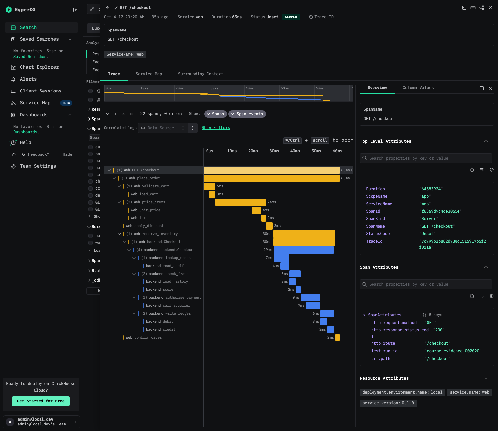

Using it · module 1 of 3
Sending telemetry
How an application identifies itself and passes one trace identifier from an HTTP request through a gRPC call into its log lines, shown on a real captured request.
After this module you can
- set the resource attributes that identify a service and its environment,
- explain how a trace identifier travels from an HTTP request through a gRPC call and into log lines, and
- read a request's spans and logs together.
The smallest example: GET /chain
This module explains what an application has to send so that one request can be found again as a set of spans and log lines. The example is a request to GET /chain on the test app's web service. The web service calls the backend service over gRPC and answers 200. That one request produces four spans in a single trace and two log lines, and the response carries the trace identifier in an x-trace-id header.
Three things have to be true for that to work. Each service says who it is and where it runs (resource attributes). The trace context travels from the web service to the backend with the call. Each log line is written with the identifiers of the span that was active when it was written. The next sections take them in turn, and the trace explorer shows the result for a real request.
Resource attributes: who and where
A resource attribute describes the process that produced the telemetry, and it is attached to every span, log record and metric that process sends. The test app sets three.
| Attribute | Value in the test app | Used for |
|---|---|---|
service.name | web or backend (from SERVICE_NAME, with those defaults) | Which service wrote this row. Dashboards and the error list group and filter on it. |
service.version | the version of the app's crate | Which build was running, so a change in behaviour can be tied to a release. |
deployment.environment.name | local | Which environment the data belongs to. |
The environment attribute matters when several environments report to one place. A filter such as deployment.environment.name = production only works if every service spells the value the same way. If the web service reports production and the backend reports prod, the filter returns the web spans and silently drops the backend spans of the same requests. Choose the values once, and set them in the same place for every service.
One trace identifier across HTTP and gRPC
A trace is the set of spans that share one 32-character trace id. The web service receives the HTTP request and starts the server span. When it calls the backend, it starts a client span and writes the trace context into the call. The backend reads the context and starts its own server span as a child of that client span. The standard that defines the header is W3C Trace Context, and its header is traceparent. For HTTP it is a request header, and for gRPC it travels as metadata with the call.
sequenceDiagram
autonumber
participant C as Client
participant W as Web service
participant B as Backend
C->>W: GET /chain
W->>B: gRPC Process, traceparent in metadata
B-->>W: reply
W-->>C: 200 and x-trace-id
x-trace-id at step 4.A traceparent value has four parts separated by hyphens: a version, the trace id, the id of the span making the call, and flags. Built from the ids in the captured trace below, the value the web service sends to the backend has this form (an illustration assembled from the sample, not a captured header):
traceparent: 00-db4b635984efdc74db9c685a6ad2fdaf-68ba91820c84df47-01
The captured data confirms the link. The backend server span has ParentSpanId 68ba91820c84df47, which is the SpanId of the web client span.
Log lines that carry the ids
The test app's log records include the trace id and the span id of the span that was active when the line was written. In the captured trace below, the web service's line chain handled carries the id of the web server span, and the backend's line backend processed carries the id of the backend server span. A search for the trace id returns both lines, and the span id says which operation wrote each.
The response header is the entry point. Every response except /health and /admin/flush has x-trace-id, the 32-character trace id of the server span. A request also carries x-test-run-id, which the app records as the attribute test_run_id on spans, log records and metrics, and forwards to the backend in gRPC metadata. Module 5 uses that attribute to follow a whole test run.
Trace explorer
The waterfall below shows the four spans of one real GET /chain request. Select a span, with a click or by pressing Enter, to see its service, kind, status, ids and the log lines that carry its span id. The arrow keys move between spans.
Select a span. Without JavaScript, the tables below list the same data.
The /chain-fail view is described from the per-request contract and is not a captured trace. A failing request has three spans, all with status Error, because the backend fails and the error passes up through the web client and server spans, and two ERROR log lines, one from each service. The web response is HTTP 502.
The captured trace as data
Trace id db4b635984efdc74db9c685a6ad2fdaf.
| Service | Kind | Name | Status | Duration (ms) | Span id | Parent span id |
|---|---|---|---|---|---|---|
| web | Server | GET /chain | Unset | 42.132 | dfe02fcabfcef1a4 | none |
| web | Client | backend.Process | Unset | 42.1 | 68ba91820c84df47 | dfe02fcabfcef1a4 |
| backend | Server | backend.Process | Unset | 6.445 | c38377bb6f4575af | 68ba91820c84df47 |
| backend | Internal | backend.compute | Unset | 6.416 | cb48dc6035fbb9c6 | c38377bb6f4575af |
| Service | Severity | Body | Span id on the log | Written inside |
|---|---|---|---|---|
| backend | INFO | backend processed | c38377bb6f4575af | Server span backend.Process |
| web | INFO | chain handled | dfe02fcabfcef1a4 | Server span GET /chain |
Source: ClickHouse otel.otel_traces / otel_logs, WHERE TraceId = 'db4b635984efdc74db9c685a6ad2fdaf', captured 2026-10-03T14:20:34Z. One request on one laptop; the durations show what that request took and are not a performance claim.
Function-level detail: how much code you write depends on the runtime
The spans so far (a request, a call to another service) come from one layer that wraps the whole request. Seeing the functions inside a service is a separate question, and the answer depends on the language.
| Runtime | Without changing code | Function-level spans |
|---|---|---|
| .NET, Java, Python, Node.js | OpenTelemetry's zero-code instrumentation hooks the web framework, HTTP and database clients, and gRPC when you add a library to the container and set environment variables. | Your own methods usually need a line of code, or a configuration list of method names where the tool supports one. |
| Rust (this test app) | No library hooks into compiled code to create spans, so spans are created in the source. An external eBPF-based tool could add request-level spans, not function spans, and was not tried here. | The #[tracing::instrument] attribute on a function, or one #[trace_all] on a block of them. |
One attribute for a whole block
#[trace_all] is a small macro in the test app (the trace_macros crate). Placed on an impl block or an inline module, it adds #[tracing::instrument(skip_all)] to every function inside, so each function becomes a span. skip_all keeps arguments out of the spans. A function that already has its own #[instrument], or is named in skip(...), is left alone.
#[trace_all(skip(new))]
impl CheckoutService {
pub fn new(/* ... */) -> Self { /* skipped: not traced */ }
pub async fn place_order(&self) -> Result<(), tonic::Status> { /* ... */ }
async fn validate_cart(&self) { /* ... */ }
#[tracing::instrument(skip_all, fields(items = tracing::field::Empty, slowest_line_ms = tracing::field::Empty))]
async fn price_items(&self) { /* has its own attribute, so it is left alone */ }
}
It cannot cover a whole crate with one line, because a Rust macro only sees the code it is attached to. It is also not applied to every function by default: a span for each small helper raises the span volume and the storage cost, and buries the few spans that matter.
The captured result: 22 spans in one request
The fictitious /checkout flow has functions for validating the cart, pricing, discounts, stock, fraud checks, payment and a ledger, in both the web service and the backend. This is one real request, read from ClickHouse.
GET /checkout [web, 64.6 ms] └─ place_order [web, 64.5 ms] ├─ validate_cart [web, 5.7 ms] │ └─ load_cart [web, 3.1 ms] ├─ price_items [web, 23.9 ms] items=5 slowest_line_ms=4 │ ├─ unit_price [web, 4.3 ms] │ └─ tax [web, 2.2 ms] ├─ apply_discount [web, 3.2 ms] ├─ reserve_inventory [web, 29.6 ms] │ └─ backend.Checkout [web, 29.6 ms] │ └─ backend.Checkout [backend, 28.6 ms] │ ├─ lookup_stock [backend, 7.4 ms] │ │ └─ read_shelf [backend, 4.2 ms] │ ├─ check_fraud [backend, 5.5 ms] │ │ ├─ load_history [backend, 3.2 ms] │ │ └─ score [backend, 2.3 ms] │ ├─ authorise_payment [backend, 9.4 ms] │ │ └─ call_acquirer [backend, 6.8 ms] │ └─ write_ledger [backend, 6.3 ms] │ ├─ debit [backend, 3.1 ms] │ └─ credit [backend, 3.1 ms] └─ confirm_order [web, 2.1 ms]
Source: ClickHouse otel.otel_traces, WHERE TraceId = '7c799b2b882d738c1515917b5f2f01aa' (a /checkout request: function spans from #[trace_all]), captured 2026-10-03T14:20:34Z. One request on one laptop; the durations are not a performance claim.

A loop is one span, not one span per pass
price_items loops over five cart lines. A span per line would make 1,000 spans for a 1,000-line cart. Instead the function has one span, which covers the loop and the two pricing calls after it, and it records how many passes ran and how long the slowest took: items=5, slowest_line_ms=4 in the request above. Those two fields can be searched and charted like any attribute. A function that records fields declares them in its own #[instrument], which the macro leaves alone. A metric histogram of pass times would add the usual spread, and this app does not have one.
What each request emits
The test app emits an exact, documented amount of telemetry for each endpoint, so a check can compare what arrived with what was sent. The table is the app's contract, from its README.
| Request | HTTP status | Spans (one trace) | Log records |
|---|---|---|---|
GET /ok | 200 | 1: web SERVER GET /ok | 1 INFO |
GET /slow?ms=N | 200 after N ms (default 200) | 1: web SERVER GET /slow | 1 INFO |
GET /error | 500 | 1: web SERVER GET /error, status Error | 1 ERROR |
GET /exception | 500 | 1: web SERVER GET /exception, status Error, with an exception event (exception.type, exception.message) | 1 ERROR |
GET /chain | 200 | 4: web SERVER GET /chain, web CLIENT backend.Process, backend SERVER backend.Process, backend INTERNAL backend.compute | 2 INFO (web, backend) |
GET /chain-fail | 502 | 3: web SERVER, web CLIENT, backend SERVER, all status Error | 2 ERROR (web, backend) |
GET /checkout | 200 | 22: the fictitious checkout flow, function-level spans in web and backend (see above) | 2 INFO (web, backend) |
GET /health | 200 | none | none (no metrics either) |
Configuration: the exporter and the service name
The test app reads three environment variables for telemetry, as listed in its README.
| Variable | Default | Meaning |
|---|---|---|
OTEL_EXPORTER_OTLP_ENDPOINT | unset | The OTLP/gRPC endpoint to send to. When it is unset, no exporter is created and nothing goes over the network, although spans still get real ids. |
SERVICE_NAME | web or backend | The value of the service.name resource attribute. |
OTEL_METRIC_EXPORT_INTERVAL_MS | 5000 | How often metrics are exported, in milliseconds. |
Example, from the README, for the backend service pointed at a local collector:
SERVICE_NAME=backend BACKEND_ADDR=0.0.0.0:50051 \ OTEL_EXPORTER_OTLP_ENDPOINT=http://localhost:4317 cargo run --release -p backend
The README documents this variable as an OTLP/gRPC endpoint. The collector's own configuration is covered in module 8.
Check your understanding
All correct. Continue to module 5 to read the dashboards and the error list built from this telemetry.